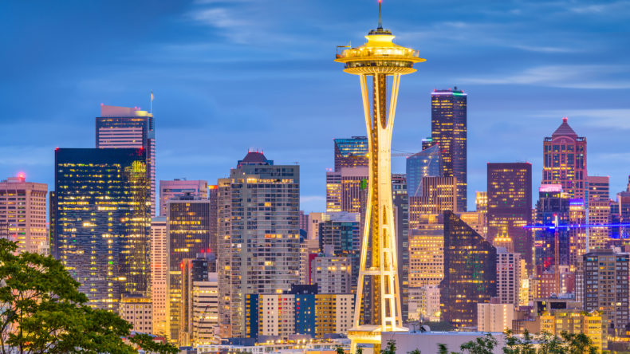

Seattle

Seattle is Washiontons most popular city, with a population of 733,919 people, it offers its resisdents an urban feel in northeastern Washionton.
Seattle is Washiontons most popular city, with a population of 733,919 people, it offers its resisdents an urban feel in northeastern Washionton.
Resisdents here make an average of $52,142.
Seattle was first incorporated on Decmeber 2nd, 1869.
Top things to do in Seattle:
- Pikes place
- Space Needle
- Museum of Pop Culture